sharla gelfand
no :)
hi, i'm sharla! i'm a freelance developer specializing in data science workflows and data visualization, and i dabble in front-end dev (can you tell)? i mostly use R, and love open source.
no :)
1 # the {opendatatoronto} R package interfaces with the city of toronto's open data portal
2 # learn more: sharlagelfand.github.io/opendatatoronto
3
4 install.packages("opendatatoronto")
5
6 library(opendatatoronto)
no :)
1 #
{mermaidr} is an R package that enables you to access data from MERMAID, an open-source data platform developed to help collect, analyze, and share coral reef monitoring data
2 # learn more: github.com/data-mermaid/mermaidr
3 devtools::install_github("data-mermaid/mermaidr")
4
5 library(mermaidr)
no :)

no :)